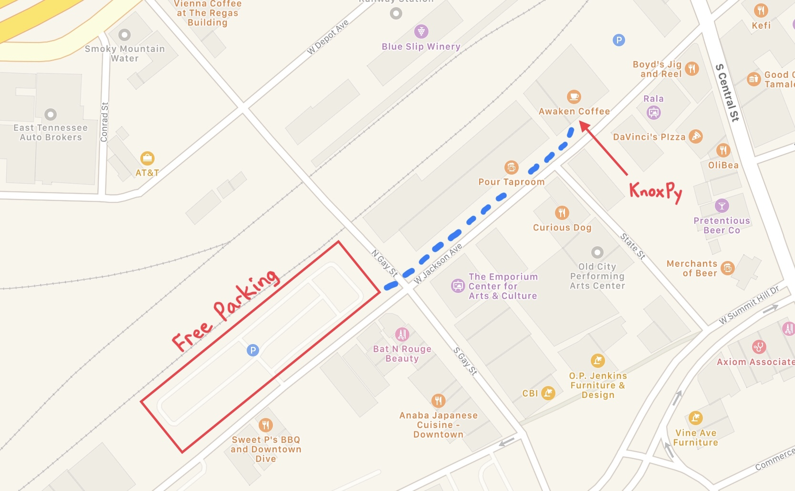

Python users group in Knoxville, TN
Welcome Pythonistas! The KnoxPy group meets on the first Thursday of every month from 6:30-8:30pm at the Technology Cooperative in downtown Knoxville. Meetings are informal and open to anyone interested in the Python programming language. We encourage lively discussion, demonstrations, and presentations by programmers of all skill levels. Subscribe to our newsletter and visit the links provided below to learn more about the group.
Meetup - Join us on Meetup for upcoming events and to view our past events.
Twitter - Follow us on Twitter for announcements and group discussion.
Slack - Group discussions are in the KnoxDevs #python channel on Slack.
GitHub - This website is hosted on the KnoxPy GitHub.
Email - Questions, comments, and other feedback.
The Technology Cooperative is located at 127 West Jackson Avenue, Unit 103, Knoxville, TN 37902. The nearest free parking is located across the street from Sweet P's BBQ.
Resources related to the Python programming language are provided below. Links are organized by category such as 📚 books, 🎒 conferences, 🎓 courses, 💻 text editors and IDEs, 🔈 podcasts, 📈 visualization tools, and 🐍 other Python sites.